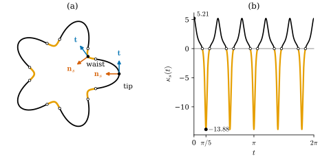
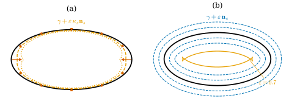
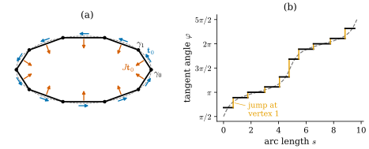

32.2 Curvature of a Plane Curve
Goals
- arc length로 parametrization된 plane curve의 signed curvature \(\kappa_s\)를 상기하고, 그 부호의 뜻을 running example로 설명할 수 있다.
- \(\kappa_s\)의 서로 동치인 네 특징 (A) tangent angle의 변화율, (B) 길이의 first variation, (C) Steiner formula, (D) osculating circle을 진술하고 유도할 수 있다.
- discrete curve와 그 discrete tangent, discrete normal을 정의하고, 다각형에 점마다의 curvature가 없는 이유를 설명할 수 있다.
Prerequisites
- Section 32.1의 “the game”.
- unit tangent vector와 signed curvature: Definition 4.4.1, Definition 4.4.2, 회전 \(J\) (4.4.1). tangent angle: Lemma 4.4.8, Theorem 4.4.9.
- osculating circle: Definition 4.5.1, Proposition 4.5.7. 직관만 필요하면 Section 0.2로 충분하다.
- closed curve의 rotation index: Definition 5.6.3, Theorem 5.6.7.
Motivation
Section 32.1은 discrete 정의를 얻는 게임의 1단계를 “smooth setting에서 서로 동치인 정의를 여러 개 적는다”로 정했다. 이 절은 plane curve의 curvature로 그 1단계를 한다. smooth curve에서는 넷이 모두 같은 수 \(\kappa_s\)를 주므로 구별할 이유가 없어 보인다. 그러나 다각형에 적용하면 서로 다른 답이 나온다(Section 32.3). 그래서 각 특징을 정확한 명제로 적어 두어야 한다.
이 절의 뒷부분에서는 다각형, 곧 discrete curve를 정의한다. 그리고 smooth 정의 \(\kappa_s = \inner{\mathbf{n}_s}{\gamma''}\)를 다각형에 그대로 적용하면 왜 쓸모가 없는지 본다.
Signed Curvature, Recalled
\(\gamma\colon I \to \R^2\)가 arc length로 parametrization된 plane curve이고 \(\mathbf{t} = \gamma'\)이 unit tangent vector라 하자(Definition 4.4.1). \(J(x, y) = (-y, x)\)는 반시계 방향 \(90^\circ\) 회전이고, \(\mathbf{n}_s = J\mathbf{t}\)는 진행 방향의 왼쪽을 향하는 unit normal이다. \(\inner{\mathbf{t}}{\mathbf{t}} = 1\)을 미분하면 \(\mathbf{t}' \perp \mathbf{t}\)이므로 \(\mathbf{t}'\)은 \(\mathbf{n}_s\)의 스칼라배이고, 그 계수가 signed curvature다(Definition 4.4.2).
이 식에서 두 가지를 기억해 두자. 첫째, curvature는 이계도함수다. 위치를 두 번 미분해야 나온다. 둘째, curvature에는 부호가 있다. 곡선이 \(\mathbf{n}_s\) 쪽(왼쪽)으로 휘면 \(\kappa_s \gt 0\), 반대쪽으로 휘면 \(\kappa_s \lt 0\)이다. 진행 방향을 뒤집으면 \(\mathbf{n}_s\)와 \(\kappa_s\)의 부호가 함께 바뀐다. 둘 다 Section 32.3에서 discrete curvature를 만들 때 그대로 지킬 성질이다.
Example 32.2.1 (running examples). (a) 원. 반지름 \(r\)인 원을 반시계 방향으로 돌면 \(\kappa_s = 1/r\)이고 \(\mathbf{n}_s\)는 중심을 향한다. 시계 방향으로 돌면 \(\kappa_s = -1/r\)이다(Example 4.4.3). (b) 타원 \(\gamma(t) = (2\cos t, \sin t)\). 반시계 방향이고, Example 0.2.5(c)에서 \(\kappa_s(t) = 2/(4\sin^2 t + \cos^2 t)^{3/2}\)이다. 뾰족한 양 끝(\(t = 0, \pi\))에서 최대 \(2\), 납작한 위아래(\(t = \pm\pi/2\))에서 최소 \(1/4\)이고, 어디서나 양수다. (c) flower curve. 극좌표로 \(r(t) = 1 + 0.3\cos 5t\)인 곡선 \(\gamma(t) = r(t)(\cos t, \sin t)\), \(0 \le t \le 2\pi\)이다. 단위벡터 \(u = (\cos t, \sin t)\), \(u^\perp = Ju = (-\sin t, \cos t)\)로 쓰면 \(u' = u^\perp\), \((u^\perp)' = -u\)이므로
\[ \gamma' = r'u + r\,u^\perp, \qquad \gamma'' = (r'' - r)\,u + 2r'\,u^\perp \]이다. \(\det(u, u^\perp) = 1\)이므로 \(\det(\gamma', \gamma'') = 2r'^2 - r(r'' - r)\)이고 \(\abs{\gamma'}^2 = r^2 + r'^2\)이다. general parameter의 공식 \(\kappa_s = \det(\gamma', \gamma'')/\abs{\gamma'}^3\)(Proposition 4.4.5)에 넣으면
이다. \(r' = -1.5\sin 5t\), \(r'' = -7.5\cos 5t\)이다. 꽃잎 끝 \(t = 0\)에서는 \(r = 1.3\), \(r' = 0\), \(r'' = -7.5\)이므로 \(\kappa_s = (1.69 + 9.75)/1.3^3 = 5.207\)이다. 꽃잎 사이의 잘록한 곳 \(t = \pi/5\)에서는 \(r = 0.7\), \(r' = 0\), \(r'' = 7.5\)이므로 \(\kappa_s = (0.49 - 5.25)/0.7^3 = -13.878\)이다. 곧 이 곡선은 볼록하지 않고, \(\kappa_s\)는 한 바퀴에 부호를 10번 바꾼다(Figure 32.2.1). 길이는 \(9.0172\)이고, 스스로 만나지 않는 반시계 방향 곡선이므로 \(\int\kappa_s\,ds = 2\pi\)이다.
Verification: verify/v-32-2-plane-curve-curvature.py

Figure 32.2.1의 (a)에서 오른쪽 꽃잎 끝을 보자. 파란 \(\mathbf{t}\)는 위로, 주홍 \(\mathbf{n}_s\)는 왼쪽(꽃의 안쪽)으로 향하고, 곡선은 주홍 쪽으로 휘어 들어간다. 그 위의 잘록한 곳에서도 \(\mathbf{n}_s\)는 여전히 안쪽을 향하지만 곡선은 바깥쪽으로 휜다. 그래서 그 짧은 주황 구간에서만 \(\kappa_s\)가 음수다. (b)는 같은 사실을 수로 보여 준다. 다섯 봉우리의 높이는 \(5.21\)이고 다섯 골은 \(-13.88\)까지 깊게 내려간다. 골이 좁고 깊은 것은 waist가 짧은 구간에서 급하게 꺾이기 때문이다. flower curve는 Section 32.4에서 curvature flow를 돌릴 곡선이다.
Four Equivalent Descriptions
이제 \(\kappa_s\)를 네 가지 다른 방식으로 쓴다. 각각은 Section 32.3에서 하나의 discrete curvature가 된다. 이 절의 기호에서 tangent angle은 \(\varphi\)로 쓴다(Conventions 참고).
(A) The rate of change of the tangent angle
Proposition 32.2.2 (curvature as turning). \(\gamma\colon I \to \R^2\)가 arc length로 parametrization된 plane curve이고 \(\varphi\colon I \to \R\)가 연속이며 \(\mathbf{t} = (\cos\varphi, \sin\varphi)\)를 만족한다고 하자(tangent angle). 그러면 \(\varphi\)는 매끄럽고 \(\kappa_s = \varphi'\)이며, \([a, b] \subseteq I\)에 대하여
Proof. Lemma 4.4.8은 매끄러운 tangent angle \(\theta\)를 만들고, 연속인 tangent angle은 모두 \(\theta + 2\pi m\)(\(m\)은 정수) 꼴임을 보인다. 따라서 \(\varphi = \theta + 2\pi m\)은 매끄럽고 \(\varphi' = \theta' = \kappa_s\)이다(Theorem 4.4.9). (32.2.3)은 미적분학의 기본정리다.
discrete 판에서 쓸 것은 미분형 \(\kappa_s = \varphi'\)이 아니라 적분형 (32.2.3)이다. 구간 위의 curvature의 적분은 “그 구간에서 접선이 돈 각”이고, 이 각은 다각형에서도 잴 수 있다.
(B) Length variation
곡선을 조금 움직이면 길이가 얼마나 변하는가? 평평한 곳을 법선 방향으로 밀면 길이가 거의 변하지 않지만, 많이 휜 곳을 밀면 길이가 크게 변한다. 이것을 정확히 쓰면 다음과 같다.
Proposition 32.2.3 (first variation of length). \(\gamma\colon [0, L] \to \R^2\)가 arc length로 parametrization된 plane curve이고 \(\eta\colon [0, L] \to \R^2\)가 매끄러운 함수라 하자. \(\eta(0) = \eta(L) = 0\)이거나, \(\gamma\)가 주기 \(L\)인 closed curve이고 \(\eta\)도 주기 \(L\)이라 하자. \(\gamma_\varepsilon = \gamma + \varepsilon\eta\)의 길이를 \(L(\gamma_\varepsilon)\)이라 하면
이 명제가 말하는 것. 길이의 변화율은 움직임 \(\eta\)의 법선 성분에 curvature를 곱해 더한 것이다. 접선 방향의 움직임은 곡선을 미끄러뜨릴 뿐이라 길이를 바꾸지 않는다.
Proof idea: 길이를 적분으로 쓰고 \(\varepsilon\)으로 미분한 뒤 부분적분한다.
Proof. \(M = \max\abs{\eta'}\)이라 하면 \(\abs{\varepsilon} M \lt 1\)일 때 \(\abs{\gamma' + \varepsilon\eta'} \ge 1 - \abs{\varepsilon}M \gt 0\)이므로 \(\gamma_\varepsilon\)은 regular이고 \(L(\gamma_\varepsilon) = \int_0^L \abs{\gamma'(s) + \varepsilon\eta'(s)}\,ds\)이다. 적분하는 함수는 \((s, \varepsilon)\)에 대해 매끄러우므로 적분 기호 안에서 미분할 수 있다(미적분학의 사실로 받아들인다). \(\abs{\gamma'} = 1\)이므로
\[ \frac{d}{d\varepsilon}\Big|_{0}\abs{\gamma' + \varepsilon\eta'} = \frac{\inner{\gamma'}{\eta'}}{\abs{\gamma'}} = \inner{\mathbf{t}}{\eta'} \]이다. 부분적분하면 \(\int_0^L \inner{\mathbf{t}}{\eta'}\,ds = \bigl[\inner{\mathbf{t}}{\eta}\bigr]_0^L - \int_0^L \inner{\mathbf{t}'}{\eta}\,ds\)이고, 경계항은 \(\eta(0) = \eta(L) = 0\)이거나 주기성 때문에 \(0\)이다. 마지막으로 \(\mathbf{t}' = \kappa_s\mathbf{n}_s\) (32.2.1)를 넣는다.
(32.2.4)의 오른쪽은 \(\eta\)와 \(-\kappa_s\mathbf{n}_s\)의 inner product \(\int\inner{-\kappa_s\mathbf{n}_s}{\eta}\,ds\)다. 유한차원에서 \(df(\eta) = \inner{\grad f}{\eta}\)이듯, 이 inner product(곡선 위의 \(L^2\) inner product)에 대한 길이의 gradient는 \(-\kappa_s\mathbf{n}_s\)라고 말할 수 있다. Cauchy–Schwarz 부등식에 의해, \(\int\abs{\eta}^2 ds\)가 같은 움직임 가운데 길이를 가장 빨리 줄이는 것은 \(\eta\)가 \(\kappa_s\mathbf{n}_s\)의 양수배일 때다(Exercise 32.2.4). 곧 길이를 가장 빨리 줄이려면 curvature에 비례하는 속력으로 법선 방향으로 움직인다. Section 32.4의 curve shortening flow가 이것이다.
(C) The Steiner formula
(B)와 달리 모든 점을 같은 거리 \(\varepsilon\)만큼 법선 방향으로 밀어 보자. 그러면 길이의 변화가 total curvature로 정확히 정해진다.
Proposition 32.2.4 (Steiner formula for a plane curve). \(\gamma\colon \R \to \R^2\)가 arc length로 parametrization된 주기 \(L\)인 closed curve이고 \(K = \max\abs{\kappa_s}\)라 하자. \(\abs{\varepsilon}K \lt 1\)인 모든 \(\varepsilon\)에 대하여 offset curve \(\gamma_\varepsilon = \gamma + \varepsilon\mathbf{n}_s\)는 regular closed curve이고
이다. 특히 \(\gamma\)가 스스로 만나지 않고 반시계 방향으로 돌면 \(L(\gamma + \varepsilon\mathbf{n}_s) = L - 2\pi\varepsilon\)이다.
Proof. \(\mathbf{n}_s = J\mathbf{t}\)를 미분하면 \(\mathbf{n}_s' = J\mathbf{t}' = \kappa_s J\mathbf{n}_s = \kappa_s J^2\mathbf{t} = -\kappa_s\mathbf{t}\)이다(\(J^2 = -\id\)). 따라서 \(\gamma_\varepsilon' = \mathbf{t} + \varepsilon\mathbf{n}_s' = (1 - \varepsilon\kappa_s)\,\mathbf{t}\)이고, \(\abs{\varepsilon\kappa_s} \le \abs{\varepsilon}K \lt 1\)이므로 \(\abs{\gamma_\varepsilon'} = 1 - \varepsilon\kappa_s \gt 0\)이다. \(\gamma_\varepsilon\)은 regular이고 주기 \(L\)이며, 길이는 \(\int_0^L(1 - \varepsilon\kappa_s)\,ds = L - \varepsilon\int_0^L\kappa_s\,ds\)이다. 스스로 만나지 않는 반시계 방향 곡선은 rotation index가 \(1\)이므로(Theorem 5.6.7, Proposition 5.6.12) \(\int_0^L\kappa_s\,ds = 2\pi\)이다.
반시계 방향 곡선에서 \(\mathbf{n}_s\)는 안쪽을 향하므로 \(\varepsilon \gt 0\)은 안으로, \(\varepsilon \lt 0\)은 밖으로 미는 것이다. 반지름 \(r\)인 원을 안으로 \(\varepsilon\) 밀면 반지름 \(r - \varepsilon\)인 원이 되어 길이가 정확히 \(2\pi\varepsilon\) 준다. 눈여겨볼 점은 (32.2.5)가 근사식이 아니라 \(\varepsilon\)에 대한 일차식으로 정확하다는 것이다. 곡면에서는 \(\varepsilon^2\) 항이 붙는다(Proposition 31.2.6). 조건 \(\abs{\varepsilon}K \lt 1\)이 깨지면 offset curve에 뾰족점이 생기고 식도 틀린다(Figure 32.2.2(b)).
(D) The osculating circle
Proposition 32.2.5 (curvature from circles through three points). \(\gamma\)가 arc length로 parametrization된 plane curve이고 \(\kappa_s(s_0) \neq 0\)이라 하자. \(s_1, s_2, s_3\)가 \(s_0\)에 충분히 가깝고 서로 다르면 \(\gamma(s_1), \gamma(s_2), \gamma(s_3)\)을 지나는 원이 하나 있다. \(s_1, s_2, s_3 \to s_0\)일 때 그 원의 반지름은 \(1/\abs{\kappa_s(s_0)}\)으로, 중심은 center of curvature \(\gamma(s_0) + \mathbf{n}_s(s_0)/\kappa_s(s_0)\)으로 수렴한다. 따라서 \(\abs{\kappa_s(s_0)}\)은 극한 원(osculating circle)의 반지름의 역수이고, \(\kappa_s(s_0) \gt 0\)인 것은 그 중심이 \(\mathbf{n}_s\) 쪽에 있는 것과 같다.
Proof. 앞의 두 문장은 Proposition 4.5.7이고, 극한 원은 Definition 4.5.1의 osculating circle이다. 중심에서 \(\gamma(s_0)\)을 빼면 \(\mathbf{n}_s/\kappa_s\)이므로, 중심이 \(\mathbf{n}_s\) 쪽에 있는 것은 \(1/\kappa_s \gt 0\)인 것과 같다.
(D)는 (A)–(C)와 달리 적분이 없는 점마다의 특징이다. Section 32.3에서 세 이웃 vertex를 지나는 원을 쓸 때 그대로 따라간다.
Example 32.2.6 (the circle, four ways). 반지름 \(r\)인 원을 반시계 방향으로 도는 \(\gamma(s) = r(\cos(s/r), \sin(s/r))\), \(0 \le s \le 2\pi r\)에서 네 특징이 모두 \(1/r\)을 준다. (A) \(\mathbf{t} = (-\sin(s/r), \cos(s/r))\)이므로 \(\varphi(s) = s/r + \pi/2\)이고 \(\varphi' = 1/r\)이다. (B) \(\eta = \mathbf{n}_s = -\gamma/r\)(안쪽 단위법선)로 움직이면 \(\gamma_\varepsilon\)은 반지름 \(r - \varepsilon\)인 원이므로 \(dL/d\varepsilon = -2\pi\)이고, (32.2.4)의 오른쪽도 \(-\int_0^{2\pi r}(1/r)\,ds = -2\pi\)이다. (C) offset은 반지름 \(r - \varepsilon\)인 원이므로 길이 \(2\pi(r - \varepsilon) = L - 2\pi\varepsilon\)이고, 이것은 \(\abs{\varepsilon} \lt r\)에서 (32.2.5)와 같다. (D) 원 위의 세 점을 지나는 원은 그 원 자신이므로 극한도 반지름 \(r\)이다.

Figure 32.2.2는 (B)와 (C)의 차이를 보여 준다. (a)에서 주홍 화살표의 길이를 비교해 보자. 양 끝에서는 \(\kappa_s = 2\)이므로 가장 길고, 위아래에서는 \(\kappa_s = 1/4\)이라 거의 보이지 않는다. 그래서 주황 곡선은 양 끝에서만 안으로 들어온다. (b)의 파란 곡선들은 반대로 어디서나 같은 간격을 유지한다. 바깥쪽 둘은 원에 가까워지고 안쪽 둘은 양 끝이 점점 뾰족해진다. 안쪽으로 \(1/\kappa_s\)보다 멀리 밀면(주황 \(\varepsilon = 0.7\)), 양 끝에서 곡선이 스스로를 넘어가 작은 고리를 만든다. 그곳에서 \(1 - \varepsilon\kappa_s \lt 0\)이 되어 Proposition 32.2.4의 증명이 깨진다.
Example 32.2.7 (the ellipse, numbers). Figure 32.2.2의 수는 다음과 같다. \(\eta = \kappa_s\mathbf{n}_s\)로 움직이면 (32.2.4)에서 \(dL/d\varepsilon = -\int_0^L\kappa_s^2\,ds = -6.6360\)이다. offset curve의 길이는 \(\abs{\varepsilon} \lt 1/2\)에서 (32.2.5)와 \(\int\kappa_s\,ds = 2\pi\)에 의해 \(L - 2\pi\varepsilon\)이고, 이것은 \(\int_0^L\abs{1 - \varepsilon\kappa_s}\,ds\)를 수치적분한 값과 \(10^{-12}\)까지 같다. \(\varepsilon = 0.7\)에서는 수치적분한 길이 \(\int_0^L\abs{1 - 0.7\kappa_s}\,ds = 5.8909\)가 \(L - 1.4\pi = 5.2902\)보다 크다. \(1 - \varepsilon\kappa_s\)가 음수인 구간이 절댓값으로 더해지기 때문이다.
Verification: verify/v-32-2-plane-curve-curvature.py
Discrete Curves
이제 게임의 대상인 다각형을 정의한다. 슬라이드처럼 다각형을 “조각마다 선형인 매개곡선”으로 볼 수도 있지만, 기하에 필요한 것은 vertex의 위치와 그 순서뿐이다.
Definition 32.2.8 (discrete curve). \(n \ge 2\)개의 점 \(\gamma_0, \gamma_1, \dots, \gamma_{n-1} \in \R^2\)의 순서 있는 목록이 이웃한 두 점이 서로 다르다는 조건(\(\gamma_{i+1} \neq \gamma_i\))을 만족할 때, 이것을 (open) discrete curve(이산 곡선)라 한다. 점 \(\gamma_i\)를 vertex, 선분 \([\gamma_i, \gamma_{i+1}]\)을 \(i\)번째 edge라 하고, edge \(i\)는 \(\gamma_i\)에서 \(\gamma_{i+1}\)로 향한다(\(i = 0, \dots, n - 2\)). \(n \ge 3\)이고 \(\gamma_{n-1}\)에서 \(\gamma_0\)으로 가는 edge \(n - 1\)도 있으면(\(\gamma_0 \neq \gamma_{n-1}\)) closed discrete curve라 하고, 이때 첨자는 \(n\)을 법으로 읽는다. edge를 이어 붙인 꺾은선을 discrete curve의 trace라 한다.
vertex는 curvilinear polygon의 vertex(Definition 5.6.9)와 같은 뜻으로 쓴다. 다만 discrete curve는 스스로 만나도 되고, 꺾이지 않는 vertex가 있어도 된다. edge는 Chapter 33에서 1-simplex라는 이름을 다시 얻는다.
Example 32.2.9. (a) 원에 내접한 정 \(n\)각형 \(\gamma_i = r(\cos(2\pi i/n), \sin(2\pi i/n))\)은 closed discrete curve다(Proposition 32.1.1). (b) smooth closed curve \(\gamma\)를 \(\gamma_i = \gamma(2\pi i/n)\)으로 sampling하면 closed discrete curve를 얻는다. 이 장은 타원과 flower curve를 이렇게 쓴다. 매개변수 \(t\)의 간격이 같아도 arc length의 간격은 같지 않다. (c) \(\gamma_0 = (0, 0)\), \(\gamma_1 = (2, 0)\), \(\gamma_2 = (3, 1)\)은 edge가 둘인 open discrete curve다.
Non-example 32.2.10. (a) \((0, 0), (0, 0), (1, 0)\)은 discrete curve가 아니다. 첫 edge의 길이가 \(0\)이라 그 방향이 정해지지 않는다. 아래의 discrete tangent를 정의할 수 없는 것이 이 조건을 넣은 이유다. (b) 점 두 개 \(\gamma_0 \neq \gamma_1\)을 “닫은” 것은 closed discrete curve로 치지 않는다(\(n \ge 3\)). 두 edge가 같은 선분을 왕복하므로 vertex에서 진행 방향이 정반대로 꺾이고, Section 32.3의 turning angle이 정해지지 않는다. (c) 순서 없는 점 집합(point cloud)은 discrete curve가 아니다. 같은 점들이라도 잇는 순서가 바뀌면 다른 discrete curve다.
Definition 32.2.11 (discrete tangent and discrete normal). discrete curve의 edge \(i\)에 대하여 edge vector, edge length, 단위벡터를
로 두고, \(\mathbf{t}_i\)를 edge \(i\)의 discrete tangent(이산 접벡터), \(J\mathbf{t}_i\)를 edge \(i\)의 discrete normal(이산 법벡터)이라 한다.
discrete tangent와 normal은 vertex가 아니라 edge에 붙는다. edge 안에서는 진행 방향이 일정하므로 이것은 smooth 정의를 그대로 적용한 것이다. 조각마다 arc length로 매개화하면 edge \(i\) 안에서 \(\gamma' = \mathbf{t}_i\)이고, \(J\mathbf{t}_i\)는 smooth의 \(\mathbf{n}_s = J\mathbf{t}\)와 같은 규약(진행 방향의 왼쪽)을 따른다.
Example 32.2.12 (regular polygon). 정 \(n\)각형에서 \(m_i = \pi(2i + 1)/n\)(edge \(i\)의 중점 방향의 각)이라 하면 합차 공식에서
\[ \begin{aligned} e_i &= 2r\sin(\pi/n)\,\bigl(-\sin m_i,\ \cos m_i\bigr),\\ \ell_i &= 2r\sin(\pi/n),\\ J\mathbf{t}_i &= \bigl(-\cos m_i,\ -\sin m_i\bigr) \end{aligned} \]이다. 곧 discrete tangent는 원의 edge 중점 방향 점에서의 unit tangent와 같고, discrete normal은 원의 중심을 향한다.
Why a Polygon Has No Pointwise Curvature
smooth 정의 (32.2.1)을 discrete curve에 그대로 적용해 보자. trace를 arc length로 매개화하면 edge \(i\) 안에서 \(\gamma' = \mathbf{t}_i\)는 상수이므로 \(\gamma'' = 0\), 곧 \(\kappa_s = 0\)이다. vertex에서는 \(\gamma'\)이 \(\mathbf{t}_{i-1}\)에서 \(\mathbf{t}_i\)로 순간적으로 바뀌므로 \(\gamma''\)이 존재하지 않는다. 굳이 말하면 “무한대”다. 어느 쪽이든 쓸모 있는 수가 아니다. 슬라이드도 “curvature는 이계도함수다”라는 정의를 discrete curve에 그대로 쓰면 \(0\)이나 “\(\infty\)”가 나온다고 지적한다 [CMU-DDG L1].

Figure 32.2.3의 (a)에서 파란 화살표를 따라 한 바퀴 돌아 보자. 한 edge 위에서는 방향이 바뀌지 않다가 vertex를 지날 때마다 왼쪽으로 꺾인다. 오른쪽 끝(\(\gamma_0\))과 왼쪽 끝에서 가장 많이 꺾이고 위아래의 납작한 곳에서는 조금만 꺾인다. (b)는 이것을 각으로 그린 것이다. 검은 계단의 수평 부분이 edge, 주황 세로 부분이 vertex에서의 꺾임이다. 가장 긴 세로 부분이 타원의 뾰족한 양 끝에 해당한다. 회색 파선(타원)과 비교하면, 계단은 매끄러운 기울기를 vertex 몇 곳에 몰아넣은 것이다.
그러면 vertex마다 “유한한 수” 하나가 남는다. vertex \(\gamma_i\)를 포함하고 다른 vertex는 포함하지 않는 trace의 조각을 잡으면, 그 조각에서 tangent angle이 바뀐 양은 조각을 어떻게 잡든 vertex에서의 꺾임과 같다. (32.2.3)에 따르면 smooth curve에서 이 양은 그 조각 위의 curvature의 적분이다. 그래서 discrete curve에서는 점마다의 curvature 대신 vertex마다의 적분한 curvature를 쓴다. 그 첫째 판이 다음 절의 turning angle이다. 다른 특징 (B)–(D)도 각각 vertex마다의 수를 준다.
Summary
- arc length로 parametrization된 plane curve에서 \(\mathbf{t}' = \kappa_s\mathbf{n}_s\), \(\mathbf{n}_s = J\mathbf{t}\)이다. curvature는 이계도함수이고 부호가 있다 (32.2.1).
- 동치인 네 특징: (A) \(\int_a^b\kappa_s\,ds\)는 접선이 돈 각 (32.2.3), (B) 길이의 \(L^2\) gradient는 \(-\kappa_s\mathbf{n}_s\) (32.2.4), (C) offset의 길이는 정확히 \(L - \varepsilon\int\kappa_s\,ds\) (32.2.5), (D) \(\abs{\kappa_s}\)는 세 점을 지나는 원의 극한의 반지름의 역수.
- discrete curve는 이웃이 서로 다른 점의 순서 있는 목록이다. discrete tangent \(\mathbf{t}_i\)와 normal \(J\mathbf{t}_i\)는 edge에 붙는다.
- discrete curve의 점마다의 curvature는 edge에서 \(0\), vertex에서 정의되지 않는다. 남는 것은 vertex마다 tangent가 바뀌는 양, 곧 적분한 curvature다.
다음 절에서는 게임의 2단계를 한다. (A)–(D)를 하나씩 discrete curve에 적용해 vertex마다의 discrete curvature 넷을 만들고, 각각이 무엇을 정확히 보존하는지 비교한다.
Exercises
Exercise 32.2.1 ★ 반지름 \(r\)인 원을 시계 방향으로 도는 \(\gamma(s) = r(\cos(s/r), -\sin(s/r))\)의 \(\mathbf{t}\), \(\mathbf{n}_s\), \(\kappa_s\)를 구하여라. offset curve \(\gamma + \varepsilon\mathbf{n}_s\)의 길이를 직접 구하고 (32.2.5)와 비교하여라.
Solution
\(\mathbf{t} = \gamma' = (-\sin(s/r), -\cos(s/r))\), \(\mathbf{n}_s = J\mathbf{t} = (\cos(s/r), -\sin(s/r)) = \gamma/r\)는 바깥쪽을 향한다. \(\mathbf{t}' = \tfrac1r(-\cos(s/r), \sin(s/r)) = -\tfrac1r\mathbf{n}_s\)이므로 \(\kappa_s = -1/r\)이다. offset \(\gamma + \varepsilon\mathbf{n}_s = (1 + \varepsilon/r)\gamma\)는 반지름 \(r + \varepsilon\)인 원이므로(\(\varepsilon \gt -r\)) 길이는 \(2\pi(r + \varepsilon)\)이다. 한편 \(\int_0^{2\pi r}\kappa_s\,ds = -2\pi\)이므로 (32.2.5)는 \(2\pi r - \varepsilon(-2\pi) = 2\pi(r + \varepsilon)\)으로 같다. 진행 방향을 뒤집으면 \(\mathbf{n}_s\)와 \(\kappa_s\)의 부호가 함께 바뀌어 식은 그대로 성립한다.
Exercise 32.2.2 ★ (32.2.2)로 flower curve의 \(\kappa_s(2\pi/5)\)와 \(\kappa_s(\pi/10)\)을 구하여라. 두 점에서 곡선은 \(\mathbf{n}_s\) 쪽으로 휘는가, 반대쪽으로 휘는가?
Solution
\(t = 2\pi/5\)에서 \(\cos 5t = \cos 2\pi = 1\), \(\sin 5t = 0\)이므로 \(r = 1.3\), \(r' = 0\), \(r'' = -7.5\)이고 \(\kappa_s = (1.69 + 9.75)/2.197 = 5.207\)이다. 다음 꽃잎의 끝이므로 \(t = 0\)과 같다. \(\mathbf{n}_s\) 쪽으로 휜다. \(t = \pi/10\)에서 \(5t = \pi/2\)이므로 \(r = 1\), \(r' = -1.5\), \(r'' = 0\)이고 \(\kappa_s = (1 + 2 \cdot 2.25 - 0)/(1 + 2.25)^{3/2} = 5.5/5.8590 = 0.939\)이다. 양수이므로 역시 \(\mathbf{n}_s\) 쪽으로 휜다. 꽃잎 끝과 잘록한 곳의 중간이지만 아직 inflection point를 지나지 않았다(Figure 32.2.1(b)에서 첫 흰 동그라미는 \(t \approx 0.44\)에 있다).
Exercise 32.2.3 ★★ 반지름 \(r\)인 원을 반시계 방향으로 두 번 도는 closed curve \(\gamma(s) = r(\cos(s/r), \sin(s/r))\), \(0 \le s \le 4\pi r\)(주기 \(4\pi r\))에 Proposition 32.2.4를 적용하여라. 일반적으로 rotation index가 \(k\)인 closed curve에서는 \(L(\gamma + \varepsilon\mathbf{n}_s) = L - 2\pi k\varepsilon\)임을 보여라.
Solution
\(\kappa_s = 1/r\)이고 \(L = 4\pi r\)이므로 (32.2.5)는 \(4\pi r - \varepsilon(4\pi r/r) = 4\pi(r - \varepsilon)\)이다(\(\abs{\varepsilon} \lt r\)). 실제로 offset은 반지름 \(r - \varepsilon\)인 원을 두 번 도는 곡선이므로 길이가 \(2 \cdot 2\pi(r - \varepsilon)\)으로 같다. 일반적으로 rotation index의 정의(Definition 5.6.3)에서 unit-speed curve의 \(\int_0^L\kappa_s\,ds = 2\pi\operatorname{rot}(\gamma) = 2\pi k\)이다. 이것을 (32.2.5)에 넣으면 된다. Proposition 32.2.4의 증명은 곡선이 스스로 만나는지 쓰지 않으므로 그대로 적용된다.
Exercise 32.2.4 ★★ Proposition 32.2.3의 상황에서 \(\gamma\)가 closed이고 \(\kappa_s\)가 항등적으로 \(0\)은 아니라 하자. \(\int_0^L\abs{\eta}^2\,ds = 1\)인 주기 \(L\)의 매끄러운 \(\eta\) 가운데 \(\tfrac{d}{d\varepsilon}\big|_0 L(\gamma + \varepsilon\eta)\)를 가장 작게 하는 것은 \(\eta = \kappa_s\mathbf{n}_s/\lVert\kappa_s\rVert\)뿐임을 보여라. 여기서 \(\lVert\kappa_s\rVert = \bigl(\int_0^L\kappa_s^2\,ds\bigr)^{1/2}\)이다. 그 최솟값은 얼마인가? 타원 \((2\cos t, \sin t)\)에서 수로 답하여라.
Solution
\(v = \kappa_s\mathbf{n}_s\)라 하면 \(\abs{v} = \abs{\kappa_s}\)이고 (32.2.4)는 \(-\int\inner{v}{\eta}\,ds\)이다. 함수에 대한 Cauchy–Schwarz 부등식에서 \(\abs{\int\inner{v}{\eta}\,ds} \le \bigl(\int\abs{v}^2\bigr)^{1/2}\bigl(\int\abs{\eta}^2\bigr)^{1/2} = \lVert\kappa_s\rVert\)이므로 변화율은 \(-\lVert\kappa_s\rVert\) 이상이다. 등호는 \(\eta\)가 \(v\)의 음이 아닌 상수배일 때뿐이고(연속함수에서 Cauchy–Schwarz의 등호 조건), \(\int\abs{\eta}^2 = 1\)이 그 상수를 \(1/\lVert\kappa_s\rVert\)로 정한다. 최솟값은 \(-\lVert\kappa_s\rVert\)이다. 타원에서는 \(\int\kappa_s^2\,ds = 6.6360\)(Example 32.2.7)이므로 최솟값은 \(-\sqrt{6.6360} = -2.5760\)이다.
Exercise 32.2.5 ★
Coding. Figure 32.2.3의 discrete curve(타원 위의 vertex 열 개)에서 위 Implementation의 tangents_normals로 discrete tangent를 구하여라. 각 vertex에서 \(\mathbf{t}_{i-1}\)의 각과 \(\mathbf{t}_i\)의 각의 차이를 \((-\pi, \pi]\) 범위로 맞춰 출력하고, 그 합을 \(2\pi\)로 나눈 값도 출력하여라.
Solution
t = 2 * np.pi * np.arange(10) / 10
X = np.stack([2 * np.cos(t), np.sin(t)], 1) # vertices on the ellipse
E, ell, T, N = tangents_normals(X)
ang = np.arctan2(T[:, 1], T[:, 0]) # angle of each discrete tangent
jump = np.angle(np.exp(1j * (ang - np.roll(ang, 1)))) # angle(t_i) - angle(t_{i-1}) in (-pi, pi]
print(np.round(jump, 4))
print("sum / 2 pi =", round(jump.sum() / (2 * np.pi), 12))위 코드는 Implementation 상자의 코드를 실행한 뒤에 실행한다. 출력은 다음과 같다.
[1.1525 0.6461 0.3484 0.3484 0.6461 1.1525 0.6461 0.3484 0.3484 0.6461]
sum / 2 pi = 1.0vertex \(0\)과 \(5\)(타원의 뾰족한 양 끝)에서 가장 많이 꺾이고, 납작한 위아래에 가까운 vertex에서 가장 적게 꺾인다. 꺾임의 합은 정확히 \(2\pi\)다. 이 꺾임의 양을 Section 32.3은 turning angle이라 부른다.